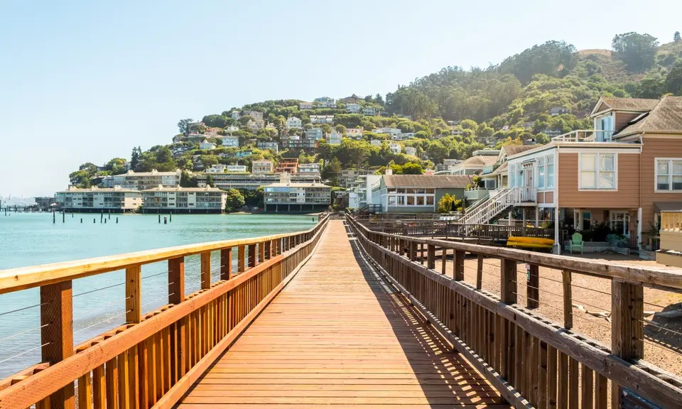

|
Visita el centro en un autobús hippie
En los años 60, San Francisco fue la ciudad de los hippies. En 1967, la ciudad se convirtió en un paraíso de la paz y el amor. Hoy en día, San Francisco sigue siendo una ciudad cool y colorida, y el espíritu hippie sigue presente en el barrio de Haight-Ashbury.
En Haight-Ashbury, puedes encontrar arte psicodélico, tiendas de discos vintage y ropa de segunda mano. Si quieres vivir la experiencia hippie de cerca, te recomiendo que hagas un tour en autobús por el barrio. El autobús es un espectáculo en sí mismo, y te llevará a ver las casas de Jimi Hendrix y Janis Joplin.
|
|
|
Pasea por el pueblo costero de Sausalito
Sausalito es un barrio encantador situado junto al mar. Desde allí, hay unas vistas geniales de San Francisco. Paseando por sus calles, podrás ver sus casitas de colores y un montón de tiendas molonas. ¡No olvides tomarte un helado en Lapperts!
En la costa, verás las famosas casas flotantes. Si sigues caminando por Bridgeway Promenade y Sausalito Boardwalk, podrás seguir disfrutando de las vistas al mar. ¡Ojo, que puedes ver focas!
Muy cerca de Sausalito, se encuentra Muir Woods, un parque natural con secuoyas espectaculares. Y, por supuesto, Alcatraz, la famosa prisión construida en una isla.
|

|
|
Descubre Alcatraz por dentro
Alcatraz, la prisión que no te puedes perder
A 2,4 kilómetros de la costa de San Francisco se encuentra Alcatraz, una isla que alberga la prisión más famosa del mundo. Conocida como "La Roca", la prisión fue cerrada en 1963, pero hoy en día es un popular destino turístico.
Alcatraz era una prisión federal de máxima seguridad que albergaba a los criminales más peligrosos de los Estados Unidos. La isla estaba rodeada de aguas frías y llenas de tiburones, lo que hacía que la fuga fuera casi imposible.
Entre los famosos presos de Alcatraz se encuentran Al Capone, Robert Stroud, "el pájaro" y George "Machine Gun" Kelly.
|

|